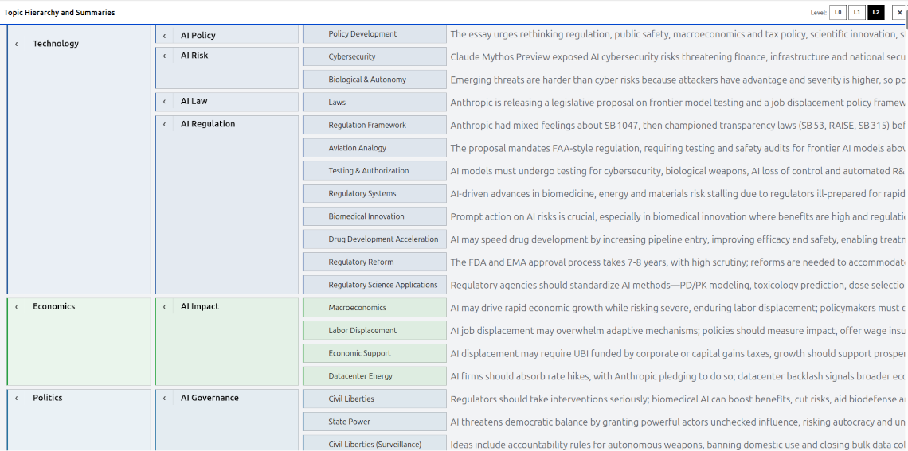

01
Topic hierarchy
See the structure at a glance
Open the hierarchy for a fast, structured overview of an article. Move between detail levels, fold individual branches, and read a summary at any level. When a topic matters, jump straight to its source passage.
- Skim broad themes before opening their subtopics.
- Change summary depth with the level controls.
- Navigate from a topic back to its supporting text.
